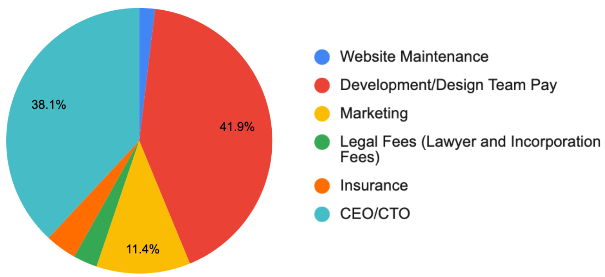
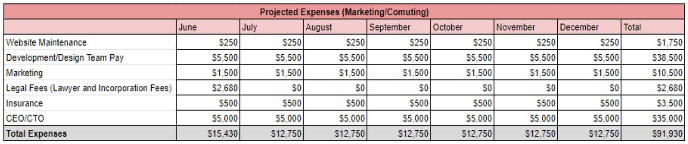
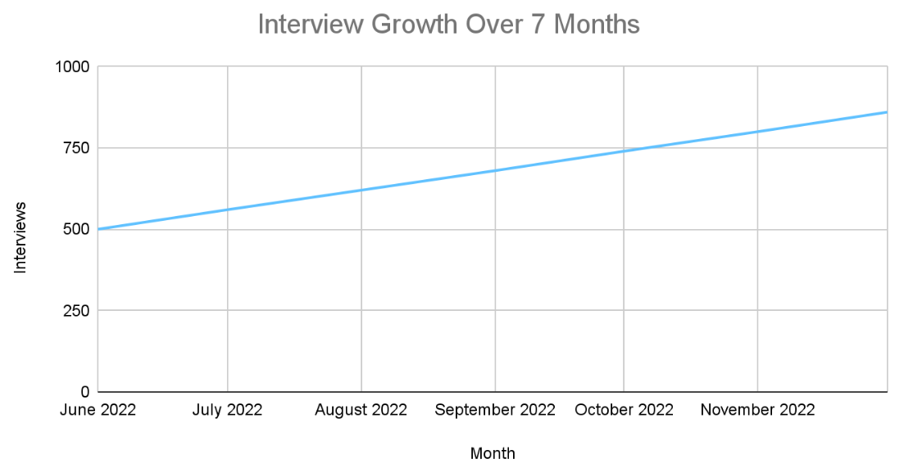
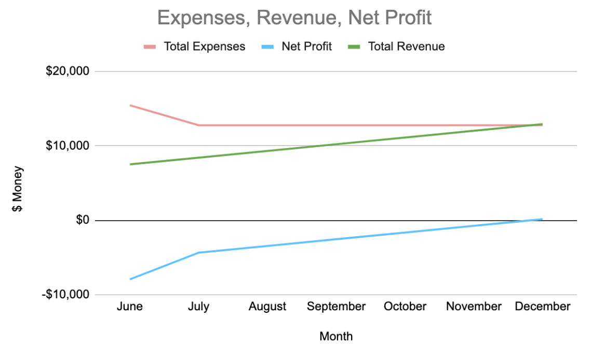
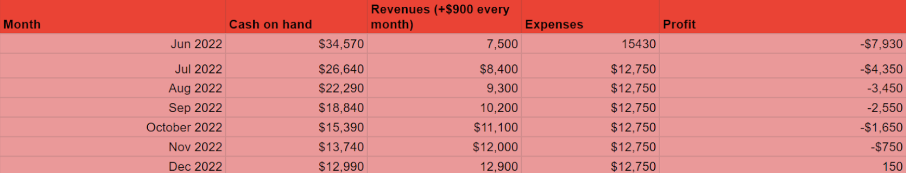

Overview
Intermingle is a high-fidelity web application prototype that helps people prepare for their interviews by connecting interviewees with professionals that can offer interview services such as mock interviews and career guidance.
Problem Statement
People looking to enter the workforce need a way to prepare for their interviews that will give them the best chance of landing their desired internship/full-time job.
Background Information
Interviews can be a source of anxiety and nervousness for many people. Preparing for interviews can be equally as daunting. With all the interview preparation resources out there, how do you find one that will truly prepare you for your interview? Many interview preparation resources out there are helpful for giving general advice for company interviews, but many of them don’t provide enough information for a specific interview. This can leave you feeling unprepared going into your interview. This is why my team and I created Intermingle, a web application that aims to help people prepare and gain confidence for their interview by connecting them with professionals that have gone through the process for that interview.
Research
SET Analysis
Our initial SET analysis was used to ideate on a product gap in the general market. We found that although there are many interview preparation resources available, most of them didn’t provide enough information for a specific interview. Once we finalized on our idea, we narrowed our SET analysis to the interview preparation market.
Survey
We sent out a survey to online interview communities on Discord and Reddit to gain insight on how people currently prepare for interviews, people’s current feeling towards the interview process, and what aspects of the interview process people are confident / have difficulty with. This information helped us ideate on the types of features we want to focus on for our product.
From our survey, we found:
- 11/16 respondents felt nervous/anxious leading up to an interview.
- 12/16 had difficulty maintaining positive body language (eye contact) or answering questions during interviews.
Value Flow Chart
This helped us visualize the existing interview preparation market and where our product would fit in. We went through various iterations and narrowed down the chart to the essential stakeholders and services. Our product would exist between the Interviewees and Professionals, as our service connects the Interviewees to the Professionals.


Feature Ideation
Storyboards
From our survey results, we brainstormed features of our product that could help with our user’s problems, such as feeling anxious during an interview and maintaining positive body language. We created storyboards for each of the features and conducted interviews with users to gain insight on which features seem more valuable to incorporate. The top 3 features our users identified with were Speed Dating, User Generated Interviews, and Body Tracker Bot.

Initial Idea and Pivot
Our initial product idea focused on the idea of speed-dating, where interviewees can meet with each other and practice common interview questions that we provide. However, we received feedback that there were already pre-existing services similar to this idea, such as “Pramp”. We pivoted the main feature of our product to allowing interviewees to hire professionals to help them with their interviews. Although hiring professionals/tutors isn’t an entirely new concept, our product differs as it’s more focused on interview preparation rather than general subject areas, and it helps interviewees prepare for specific interviews for companies.
Competitive Analysis
Our initial competitive analysis compared various interview preparation websites. After our pivot, we started comparing similar websites that allow users to hire professionals.
Design
Low-Fidelity Prototype
Initial Iterations
We focused on implementing the basic structure of our website, which included sign-up pages, home pages, reviews, and scheduling interviews.
We conducted user testing to identify any improvements we could make. Our users provided us with an extensive list of feedback, the most notable ones being a way to message past interviewees so they can discuss their experience with an interviewer, interviewers should be able to set different rates for different services, simplifying analytics to only important information, and giving the user a way to specify which services they want from the interviewer.
Final Iteration
We took our user's suggestions and incorporated them into our final lofi.
We included a message button and service tag on reviews.
We allowed interviewers to set different rates for different services.
We simplified the analytics for interviewers.

We added services when booking a session with an interviewer.

Moodboard/Style Guide
As a service that will be used to help people prepare for interviews, we wanted our app to convey certain adjectives such as trustworthy, confidence, professional, and opportunity.

For our fonts, we used Montserrat for both the headers and body text, as it offers a sophisticated and modern look. For our colors, we utilized bright blue to make elements pop while combining it with black and white for a reserved, modern look. For our logo, we underwent many design ideas and had various visuals we wanted to incorporate such as chat bubbles, ties, and grad caps . However, we ended up using a simple, reserved logo to fit a more professional theme.
High-Fidelity Prototype
We incorporated our style guide into our lofi to create our hifi.
Kickstarter
We created a Kickstarter page that can be used to pitch our idea to potential investors. This involved stating how our service works for interviewers and interviewees and creating crowdfunding rewards for our backers.

7-month Budget
We calculated a budget plan that detailed our expenses, projected interview growth each month, revenue, and total net profit to see how feasable our business model was.
- Expenses: The majority of it will come from design/development team and CEO/CTO salaries. We also accounted for website maintenance and marketing, as well as initial business expenses such as legal fees and insurance.  
- Interview Growth: We estimated we'll intially start with around 500 interviews. We predict that the number of interviews will grow by around 60 every month. By the end of the 7 months, we should have a total of 860 interviews. 
- Revenue: We’ll be collecting a 20% service fee from each interview. We estimate that users will pay around $50 per interview with an average of 1.5 hours per interview. Based on our interview growth of +60 every month, we’ll be making $900 dollars every month.
- Net Profit: By taking the total revenue and subtracting it by the total expenses, we'll be in the negative for the first 6 months, but become positive by our 7th month.  

Video Pitch
Next Steps
If we were to continue working on this project, we would work on:
- Conducting further user testing on hi-fi prototypes to refine design and adjust features.
- Improve budget plans to reflect more accurately.
- Market the product to raise funds via Kickstarter.